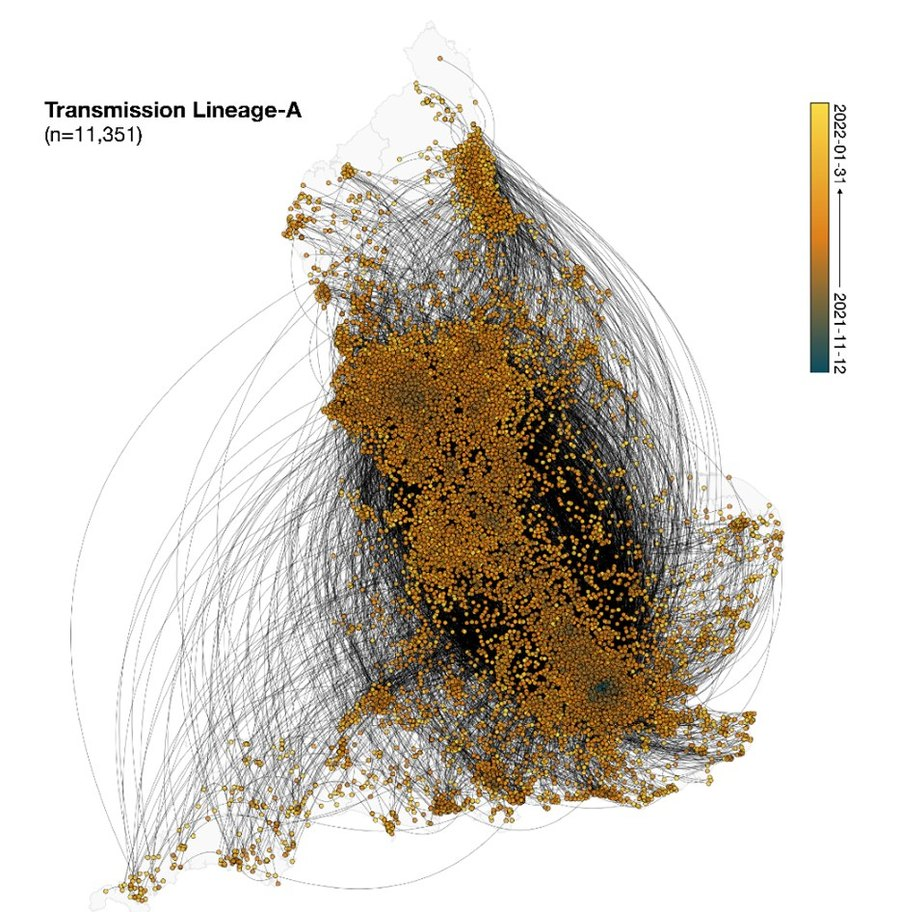
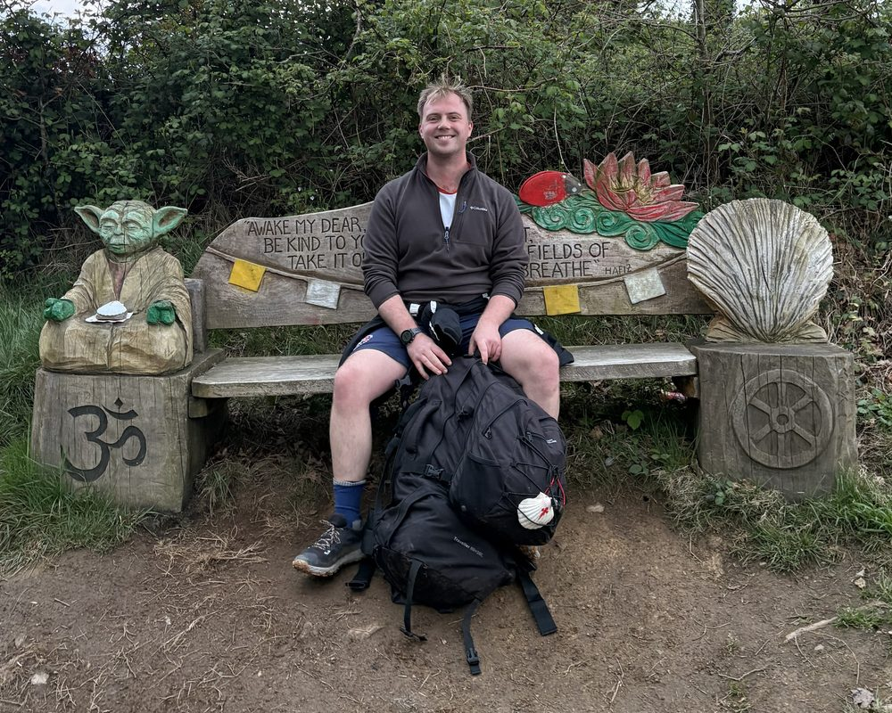

Genotype replacement in R
Dengue
Tutorial
Estimate how fast a new dengue genotype takes over, with a logistic model fitted to sequence counts.
Field epidemiology · Genomic surveillance · Arboviruses
I’m a field epidemiology fellow with the UK Health Security Agency (UKHSA) and a final-year DPhil candidate at the University of Oxford. I use pathogen genomes, surveillance data, and climate and mobility data to understand how infections such as dengue, chikungunya and SARS-CoV-2 are introduced and spread, and to turn that into evidence for surveillance and outbreak response.

The largest Omicron BA.1 transmission lineage in England (11,351 genomes), reconstructed by continuous phylogeography and coloured by date. Adapted (cropped from Fig. 3C) from Tsui, McCrone, Lambert, Bajaj, Inward, Bosetti et al., Science 2023 (author manuscript, CC BY 4.0).
Surveillance
How sampling and reporting shape what genomic and case data can tell us (Nature Communications, Epidemics), and how surveillance and modelling can work globally (Nature Medicine).
Spread
Reconstructing how pathogens arrive and spread: Omicron and Delta in England (Science, Nature), dengue in Vietnam (EID) and cholera in Malawi (EID).
UKFETP
Since September 2026, applying these skills with UKHSA’s North West Field Service: surveillance, outbreak response and applied projects.
Tools
Reproducible pipelines that researchers and public health teams can run locally, including GRAPEVNE and a data pipeline for climate-sensitive diseases.
Nature Communications · 2022
First author
Which genomes you analyse matters. With SARS-CoV-2 data from Hong Kong and Amazonas, Brazil, we showed that estimates of Rt and growth rate shift with sampling choices, while R0 and the date of origin are relatively robust.
Read the paper: Using multiple sampling strategies to estimate SARS-CoV-2 epidemiological parameters from genomic sequencing dataCode for Using multiple sampling strategies to estimate SARS-CoV-2 epidemiological parameters from genomic sequencing data
Science · 2023
Joint first author
From 115,622 genomes, we identified more than 6,000 separate introductions of Omicron BA.1 into England. Six of the eight largest lineages were already spreading when Omicron was first reported in southern Africa, and importation continued despite restrictions on travel from southern Africa.
Read the paper: Genomic assessment of invasion dynamics of SARS-CoV-2 Omicron BA.1Code for Genomic assessment of invasion dynamics of SARS-CoV-2 Omicron BA.1
Emerging Infectious Diseases · 2023
Joint first author
We traced how the Cosmopolitan genotype of DENV-2 re-emerged in Ho Chi Minh City, its probable routes of introduction and the timeline of events. The findings highlight the need for continuous, systematic genomic surveillance.
Read the paper: Reemergence of Cosmopolitan genotype dengue virus serotype 2, southern VietnamCode for Reemergence of Cosmopolitan genotype dengue virus serotype 2, southern Vietnam
DENV
Where new dengue genotypes come from, how they spread, and why some replace the ones already circulating.
CHIKV
Renewal-equation models of chikungunya outbreaks in France and Brazil, and how climate shapes them.
UKFETP
Surveillance, outbreak response and applied projects with UKHSA’s North West Field Service.
PPIE
Working with patients, families and the public on research questions and tools.
I’m happy to talk about collaborations, field epidemiology and patient involvement, or, away from work, hiking, squash and choral music. Email rhys.inward@biology.ox.ac.uk.
